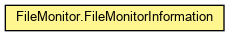

org.waarp.common.filemonitor
Class FileMonitor.FileMonitorInformation
java.lang.Object
 org.waarp.common.filemonitor.FileMonitor.FileMonitorInformation
org.waarp.common.filemonitor.FileMonitor.FileMonitorInformation
- Enclosing class:
- FileMonitor
public static class FileMonitor.FileMonitorInformation
- extends Object

Used by Waarp Business information
- Author:
- "Frederic Bregier"
|
Constructor Summary |
|
FileMonitor.FileMonitorInformation()
|
protected |
FileMonitor.FileMonitorInformation(String name,
HashMap<String,FileMonitor.FileItem> fileItems,
List<File> directories,
File stopFile,
File statusFile,
long elapseTime,
boolean scanSubDir,
AtomicLong globalok,
AtomicLong globalerror,
AtomicLong todayok,
AtomicLong todayerror)
|
| Methods inherited from class java.lang.Object |
clone, equals, finalize, getClass, hashCode, notify, notifyAll, toString, wait, wait, wait |
name
public String name
fileItems
public HashMap<String,FileMonitor.FileItem> fileItems
directories
public List<File> directories
stopFile
public File stopFile
statusFile
public File statusFile
elapseTime
public long elapseTime
scanSubDir
public boolean scanSubDir
globalok
public AtomicLong globalok
globalerror
public AtomicLong globalerror
todayok
public AtomicLong todayok
todayerror
public AtomicLong todayerror
FileMonitor.FileMonitorInformation
public FileMonitor.FileMonitorInformation()
FileMonitor.FileMonitorInformation
protected FileMonitor.FileMonitorInformation(String name,
HashMap<String,FileMonitor.FileItem> fileItems,
List<File> directories,
File stopFile,
File statusFile,
long elapseTime,
boolean scanSubDir,
AtomicLong globalok,
AtomicLong globalerror,
AtomicLong todayok,
AtomicLong todayerror)
Copyright © 2009-2013 Waarp. All Rights Reserved.